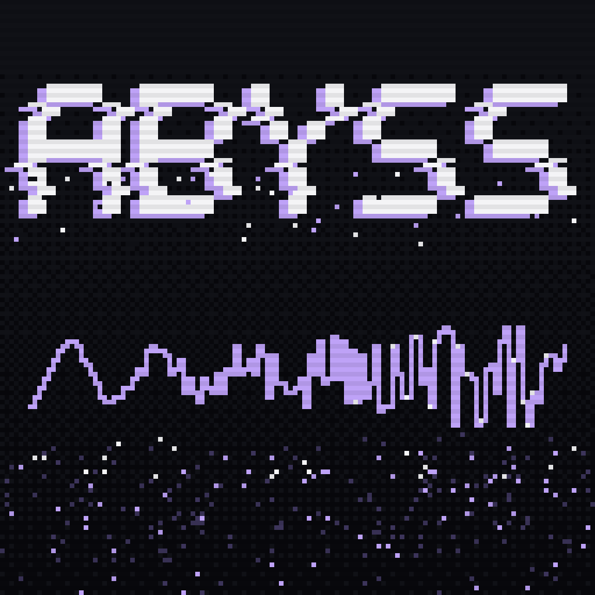

Play it in your browser
Experimental noise synth for the M-VAVE FM-1
Start
Click Play (or the screen) to start the sound. Then click once on the device so the keys reach it. A MIDI keyboard works too, in Chrome and Edge.
Try PRESETS (turn it with the mouse wheel) for the 14 factory sounds, and PLAY for a drone.
Computer keyboard
| A…' | notes C4–F5 (W E T… the black keys) |
| Z X | OCT− · OCT+ |
| Space | PLAY: drone on / off |
| ⇧+Space | REC: tap |
| 1 3 4 5 | FX · ENV · LFO · EDIT |
| 6 7 8 | GLO · HOME · SAVE |
| ← → | SELECT: the pages |
| ↓ ↑ | ALGORITHM: filter cutoff |
The knobs: hover and use the mouse wheel, or drag.
What you hear
This is the real ABYSS firmware, unchanged, running on an emulation of the FM-1's chip (fm1-emu by Joakim Eriksson). Sound and timing are close to the hardware, not identical; on a slow computer the audio may crackle.
Like it? Install it on your FM-1 from The Firmware Hub in one click, and leave it again the same way.